Speech Recognition¶
Source. Jurafsky. Chapter 26
Source: Human Auditory Range
Q1. Name current speech recognition systems
Google assistant, Apple’s Siri, Amazon’s Alexa
Challenges¶
Q2. Why speech recognition is difficult?
Adapted from Peter Ball Slides. ASR. 2022. Link
Linguistic Challenges¶
Speaker Tuned for a particular speaker, or speaker-independent? Adaptation to speaker characteristics
Environment Noise, competing speakers, channel conditions (microphone, phone line, room acoustics)
Style Continuously spoken or isolated? Planned monologue or spontaneous conversation?
Vocabulary Machine-directed commands, scientific language, colloquial expressions
Accent/dialect Recognise the speech of all speakers who speak a particular language
Other paralinguistics Emotional state, social class, …
Language spoken Estimated 7,000 languages, most with limited training resources; code-switching; language change
Machine Learning Challenges¶
Classification problem: very high dimensional output space
Sequence-to-sequence problem: very long input sequence
Data:
often noisy, with many “nuisance” factors of variation in the data
limited quantities of training data available (in terms of words) compared to text-based NLP
Manual speech transcription is very expensive
Complexity: Hierachical and compositional nature of speech productionand comprehension makes it difficult to handle with a single model
Human Ear¶
The human auditory field corresponds to a specific band of frequencies and a specific range of intensities, perceived by our ear. Acoustic vibrations outside of this field are not considered as “sounds”, even if they can be perceived by other animals.
Frequency
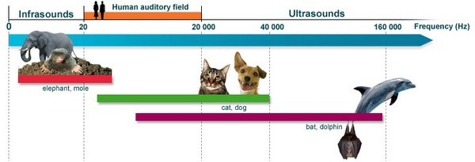 Source: Human Auditory Range
Human ear range - frequencies between 20 Hz (lowest pitch) to 20 kHz (highest pitch)
Sounds below 20 Hz are qualified as infrasounds (mole-rat, or elephant can hear them).
Sounds above 20 kHz are qualified as ultrasounds
Intensity/Amplitude
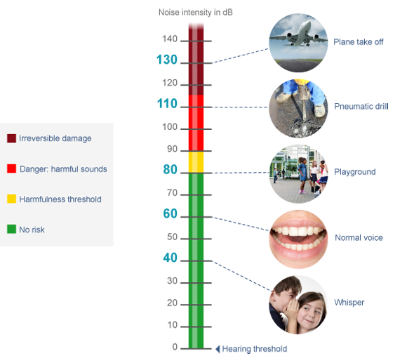
The human ear - a range from 0dB (threshold) to 120-130 dB
Frequency-Intensity
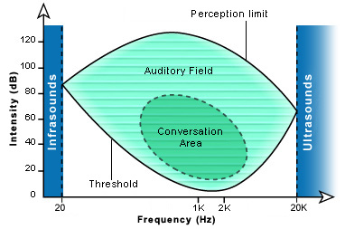
The human auditory field (green) is limited by the threshold curve (bottom) and the sound perception curve (top)
At each frequency, between 20 Hz and 20 kHz, the threshold of our sensitivity is different
Speech Recognizer Architecture¶
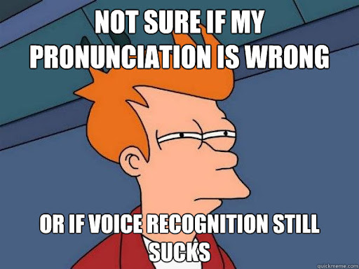
Source: https://medium.com/@haejin2909/having-problems-with-voice-recognition-youre-not-wrong-c26f9eec8d4
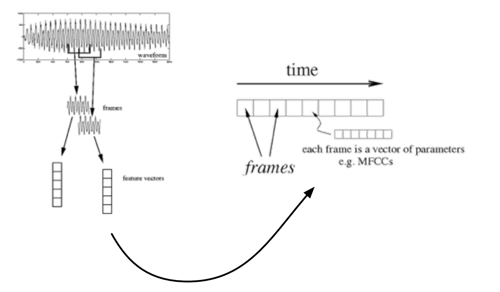
a recorded utterance is a sequence of feature vectors
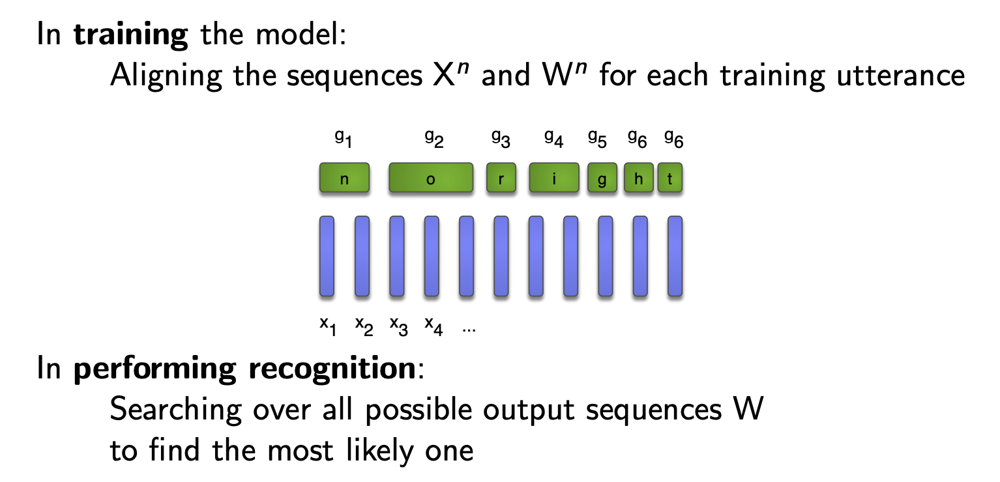
Automatic Speech Recognition ASR¶
The task of speech recognition (or speech-to-text) is to map acoustic waveforms to sequences of graphemes.
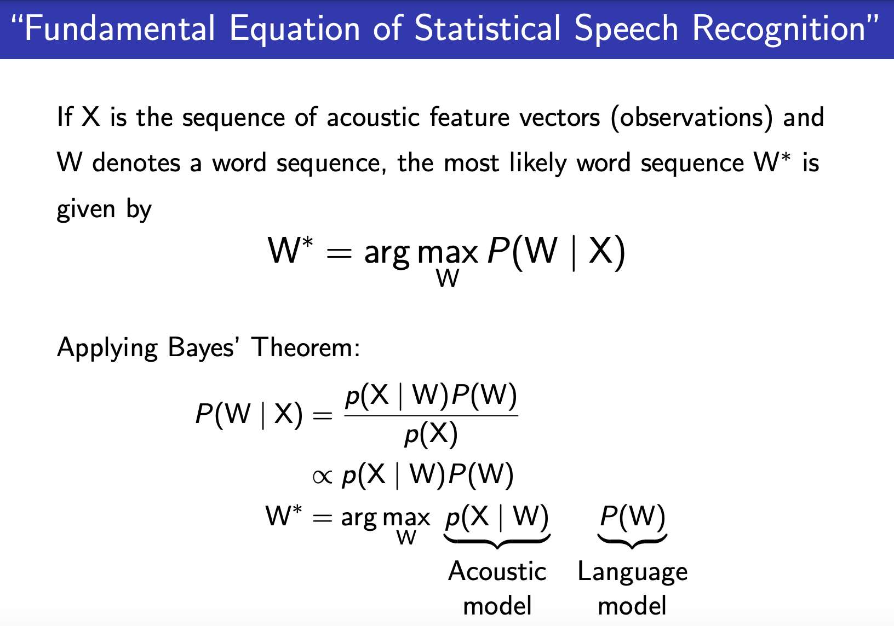
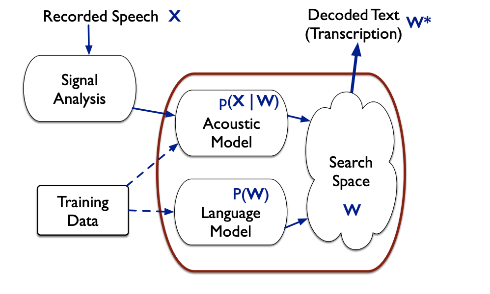
Text-to-Speech TTS¶
Q3. What are different ways we can say 1750?
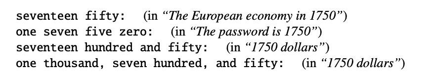
The task of TTS (or text-to-speech) is to map sequences of graphemes to acoustic waveforms.
TTS LINK - Convert text to mp3 https://colab.research.google.com/drive/1p08TLT1DxPA9Navfl12fmgZd3_3Xz_Mn?usp=sharing
ASR LINK - Convert mp3 to WAV and to Text https://colab.research.google.com/drive/1Nb8dPMvQZVV97OROcU192gsJE1fRfFUv?usp=sharing
Speech Features¶
Properties¶
Speech Wave has the following properties:
Amplitude: the magnitude of the wave signal and it is usually measured in decibels (dB). It is a measure of the strength or intensity of the wave
Time the time scale
Frequency is the number of times per second that the wave cycles (how many complete cycle the wave takes in one second) and it is measured in Hz. This is how fast the sound wave is oscillating
Hertz (Hz) equals the number of cycles per second (electric currents, electromagnetic waves (light, radar, etc.), and sound)
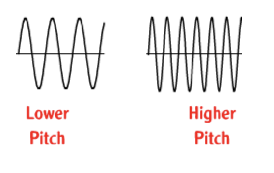
Wavelength The wavelength of a wave is the distance between two corresponding points on back-to-back cycles of a wave. This can be measured between two crests of a wave. The wavelength is usually represented in physics by the Greek letter lambda.
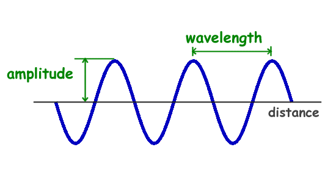 Source: Waves
Sampling Rate¶
The input to a speech recognizer is a series of acoustic waves
Audio waves are continuous in nature — but most of our processing engines are built to process digital/discrete signals
waves are sampled, quantized, and converted to a spectral representation like the log mel spectrum
As human hearing range is around 20K Hz, sampling rate of audio files in many libraries are by default set at 22050 per sec.
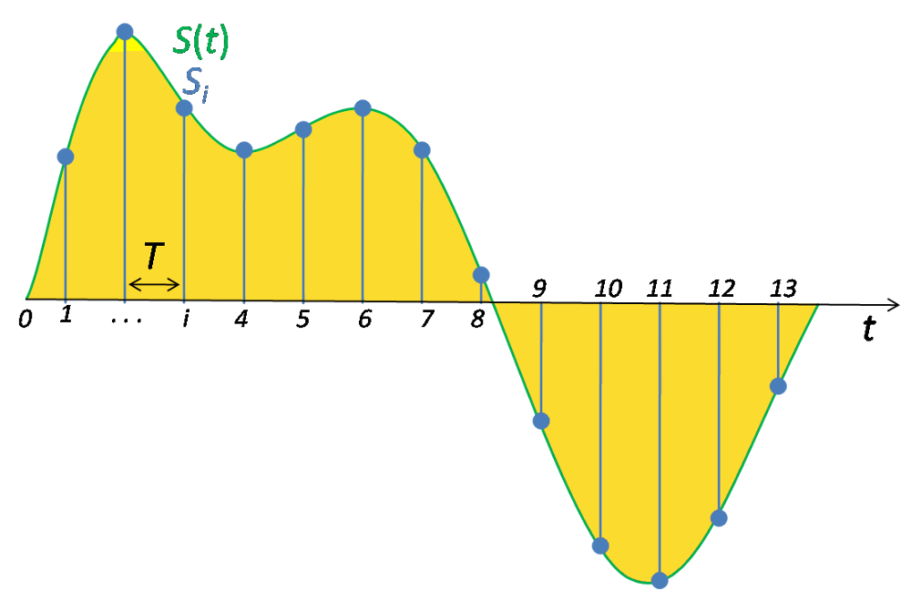
When you initiate the recording — recorder records the magnitude of audio signal at a very high rate in the range of 22K values per second. For example, you have recorded the audio for 5 seconds — then the audio file will contain (22K * 5) magnitude values of recorded signal.
How do we hear?¶
How do we hear frequency?
The way we hear frequencies in sound is known as ‘pitch’. It is a subjective impression of the frequency. A high-pitched sound has a higher frequency than a low-pitched sound.
We are more sensitive to differences between lower frequencies than higher frequencies.
We hear frequencies on a logarithmic scale rather than a linear scale. The pair at 100Hz and 200Hz will sound further apart than the pair at 1000Hz and 1100Hz.
Mel Scale¶
mel scale is a non-linear transformation scale where it transforms the frequency range of audio to a different value range — whose difference would sound identical to the end user irrespective of values.
How do we hear amplitudes?
The human perception of the amplitude of a sound is its loudness. And similar to frequency, we hear loudness logarithmically rather than linearly. We account for this using the Decibel scale.
Mel Frequency Cepstral Coefficients (MFCC)¶
MFCC is that one feature you would see being used in any machine learning experiment involving audio files.
any periodic component (for eg, echoes) shows up as sharp peaks in the corresponding frequency spectrum
cepstrum is the information of rate of change in spectral bands
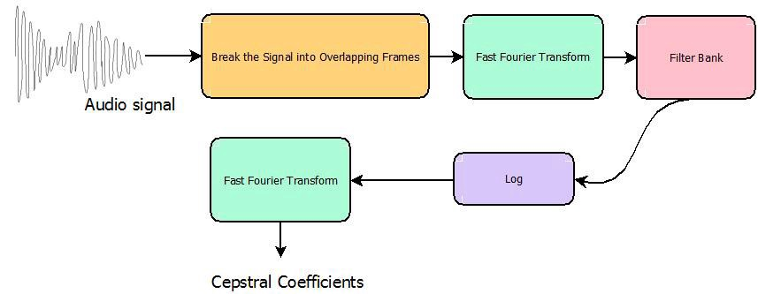
Filter Bank refers to the mel filters (coverting to mel scale) and Cepstral Coefficients are MFCCs.